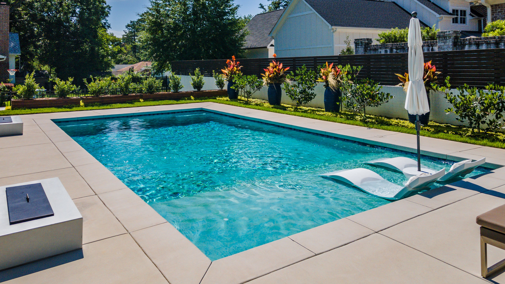

Grim Reaper Talks About His Happy Marriage With a Human

Pool Ladders Are Mysteriously Going Missing
Local woman gives birth to a hundred babies
Pets are reportedly stretching their limbs in impossible ways
Walk into a room and immediately forget what you were doing? Scientists might have an explanation
Local man successfully steals subway station. “I thought they patched that out years ago” locals say
Scientists theorize that our actions are being controlled by something from above